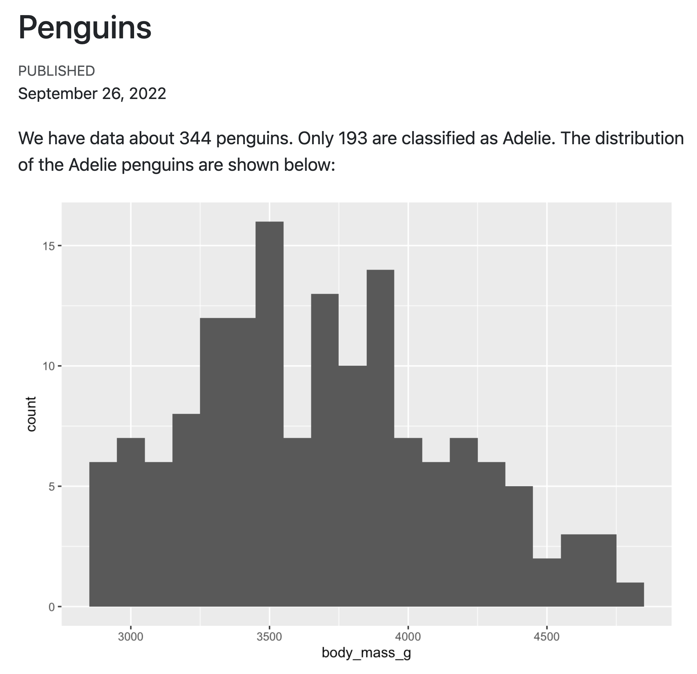
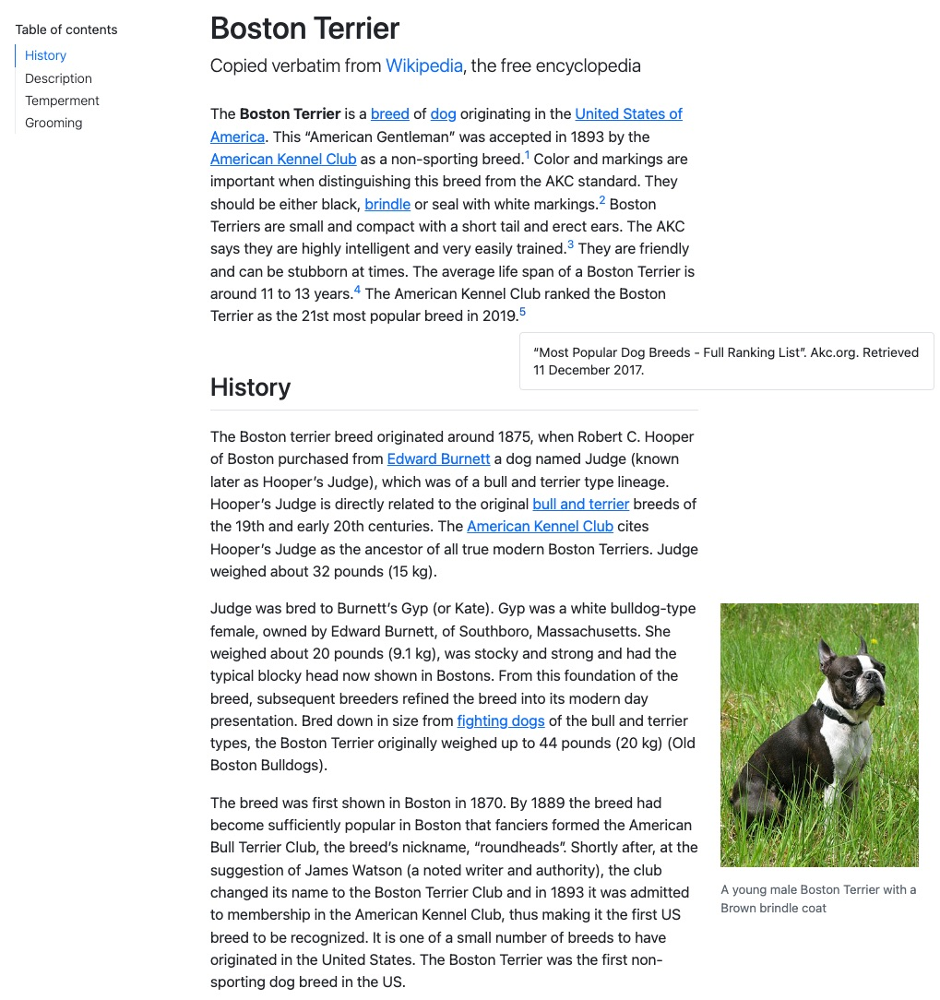
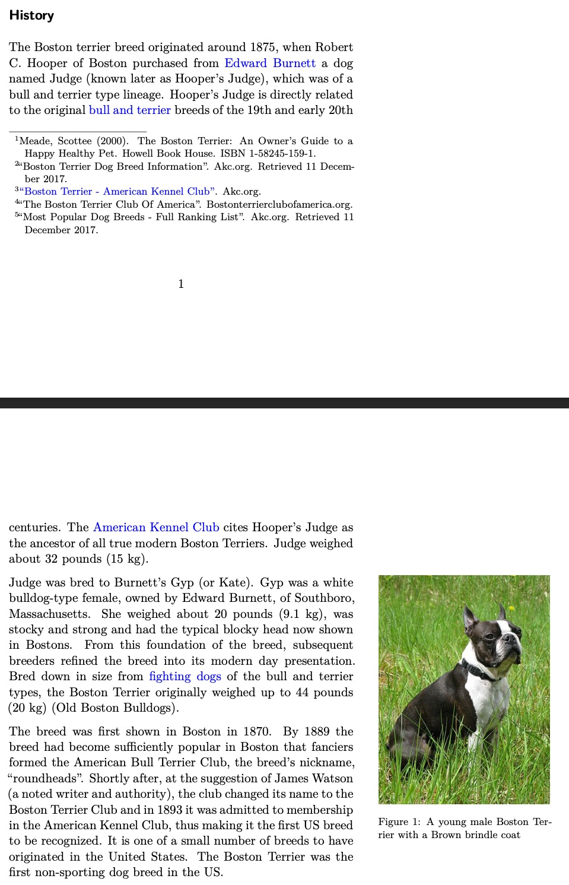
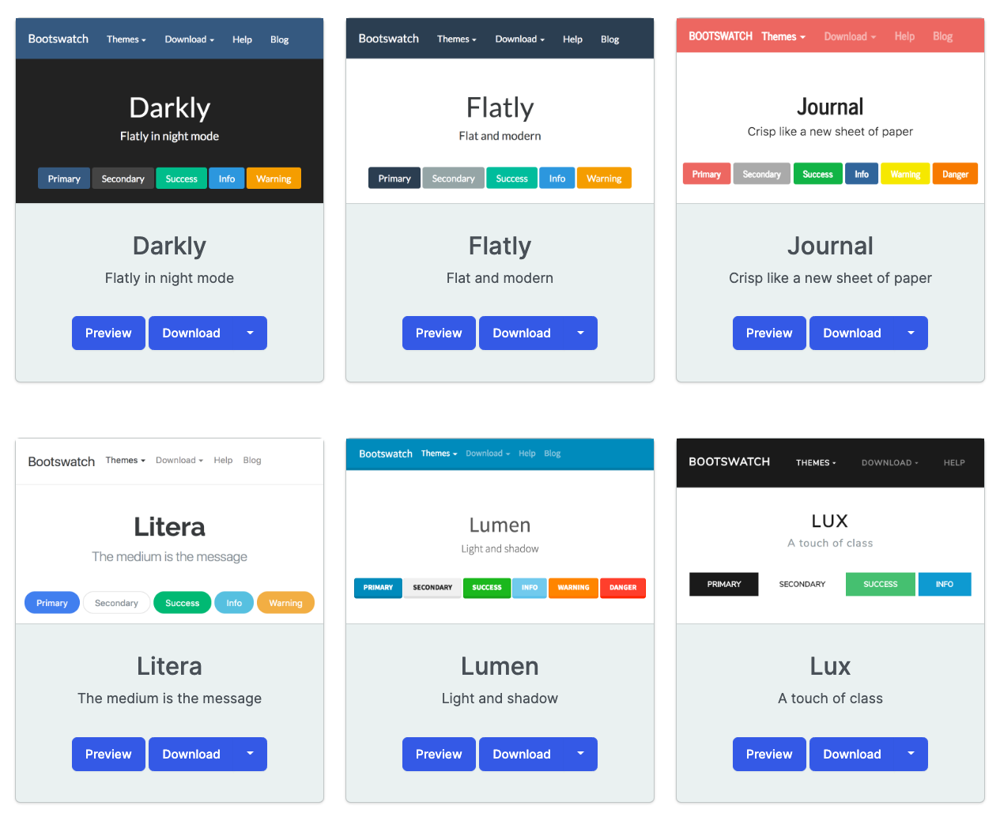

Beautiful Reports and Presentations
with Quarto
Tom Mock
9/27/22
Static documents
- A static document is your “daily driver” - has the power for a complex table of contents, figure alignment, control of ouptut/code, and other niceties
- Useful as a lab notebook, scratchpad, or the final output for your team
Parameters
You may have a set of parameters that are used to create different variations of a report. For example:
- Showing results for a specific geographic location.
- Running a report that covers a specific time period.
- Running a single analysis multiple times for different assumptions.
Parameters
Render with Parameters
```{r}
#| label: setup
#| include: false
library(tidyverse)
library(palmerpenguins)
penguin_filter <- penguins |>
filter(species == params$species,
!is.na(body_mass_g))
diff_rows <- nrow(penguins) - nrow(penguin_filter)
```
Render with Parameters
quarto render penguin-report.qmd -P species:Gentoo --output gentoo-report.html
quarto render penguin-report.ipynb -P species:Gentoo --output gentoo-report.htmlParameters for modeling
Example adapted from tidymodels docs
Unified Syntax
Quarto’s unified syntax


Pandoc fenced divs
Structure:
- Start and end with equal number of
:- minimum of 3::: - Add curly brackets to indicate the start/end of class
{.class}or{sometimes-class}
Tabsets
Split up and flip between sections of a page, alternative to just two columns
Tabsets
mpg cyl disp hp drat wt qsec vs am gear carb
Mazda RX4 21.0 6 160 110 3.90 2.620 16.46 0 1 4 4
Mazda RX4 Wag 21.0 6 160 110 3.90 2.875 17.02 0 1 4 4
Datsun 710 22.8 4 108 93 3.85 2.320 18.61 1 1 4 1
Hornet 4 Drive 21.4 6 258 110 3.08 3.215 19.44 1 0 3 1
Hornet Sportabout 18.7 8 360 175 3.15 3.440 17.02 0 0 3 2
Valiant 18.1 6 225 105 2.76 3.460 20.22 1 0 3 1Tabsets
Pandoc bracketed spans
This is magic text
Structure:
- Surround text with
[text] - Add curly brackets to indicate the start/end of class
{.class}or{sometimes-class}
Footnotes
You can create inline footnotes like so: some inline text with a^[footnote]
If you hover your mouse over the citation and footnote in this sentence you’ll see a popup displaying the reference contents:
Unified syntax
Layout image inline with paragraphs
::: {layout="[[30, 70], [100]]"}
.jpeg){width="50%" fig-alt="Description of boston terrier"}
...paragraph 1...
...paragraph 2...
:::Put image into the “gutter”/column margin
Code
Hide all code
Fold code
Code tools

Code tools, source
For example, here we specify that we want only “View Source” (no toggling of code visibility) and no caption on the code menu:

Code tools, source repo
In some situations (especially for longer documents), you may prefer to send viewers to the source code on a version-control website rather than the built in viewer.
Code appearance
Code highlighting
Code highlighting
Code highlighting


Code linking with downlit
The goal of
downlitis to provide syntax highlighting and automatic linking of R code
Aesthetics
HTML Appearance
Out of the box, Quarto is styled with Bootstrap 5 and opinionated defaults.
Bootstrap is the most popular CSS Framework for responsive websites, where v5 is the latest.
Quarto comes pre-installed with 25 themes from Bootswatch and you can use them like so:
Bootswatch themes
PDF Articles
See more on Journal Articles at https://github.com/quarto-journals/
More PDF + LaTeX templates
Great work from the NFMS Open Science team on “Quarto titlepages”: https://nmfs-opensci.github.io/quarto_titlepages/
The tex templates were written by Eli Holmes and the lua filter along with changes to the Pandoc templates to allow themes was written by Mickaël Canouil.

Presentations
Output types
-
Quarto supports a variety of formats for creating presentations, including:
revealjs— reveal.js (HTML)pptx— PowerPoint (MS Office)beamer— Beamer (LaTeX/PDF)
Follow-up reading
- Emil Hvitfeldt’s Slidecraft 101: Colors and Fonts
- Meghan Hall’s Quarto Slides
Shared structures
- Incremental reveal/lists
- Multiple columns for layout
- Title/subtitle/author/etc
- Headings
- Code/Output
Creating slides
Incremental Lists
Controllable via YAML:
Multiple Columns
Presentations with format: revealjs
SECRET TIP
Alt + Click to Zoom in to a section

Absolute Position
Absolute position allows for tight control of placement.
output-location: column-fragment

Themes
Quarto comes with 10 built-in themes:
beige, blood, dark, default, league, moon, night, serif, simple, sky, solarized
Themes + SCSS/SASS
@import url('https://fonts.googleapis.com/css2?family=Fira+Mono&family=Open+Sans:ital,wght@0,300;0,400;0,500;0,600;0,700;0,800;1,300;1,400;1,500;1,600;1,700;1,800&display=swap');
/*-- scss:defaults --*/
$link-color: #EE6331;
$font-family-sans-serif: 'Open Sans', sans-serif;
$font-family-monospace: 'Fira Mono', monospace;
$presentation-title-slide-text-align: left;
/*-- scss:rules --*/
h2 {
color: #447099 !important;
}Footer/Logo
Slide Background
Slide Background
Background videos
Automatically plays a full size video behind the slide.
| Attribute | Default | Description |
|---|---|---|
background-video |
A single video source, or a comma separated list of video sources. | |
background-video-loop |
false | Flags if the video should play repeatedly. |
background-video-muted |
false | Flags if the audio should be muted. |
background-size |
cover | Use cover for full screen and some cropping or contain for letterboxing. |
background-opacity |
1 | Opacity of the background video on a 0-1 scale. 0 is transparent and 1 is fully opaque. |
r-stack + fragments
r-stack + fragments


Custom classes
From Emil’s article:
Custom Classes

Applying classes
Use bracketed spans: [text to color]{.yellow} or use RStudio’s Visual Editor:


The end!
Read all the docs at https://quarto.org/docs/guide/
Reports
- Quarto docs: Documents
- Quarto Gallery: Articles + Reports
- Quarto Journal Articles
- “Quarto titlepages”: https://nmfs-opensci.github.io/quarto_titlepages/
Presentations
- Quarto docs: Presentations
- Quarto Gallery: Presentations
- Emil Hvitfeldt’s Slidecraft 101: Colors and Fonts
- Meghan Hall’s Quarto Slides
- Andrew Heiss’ Quarto slides on APIs and webscraping with R